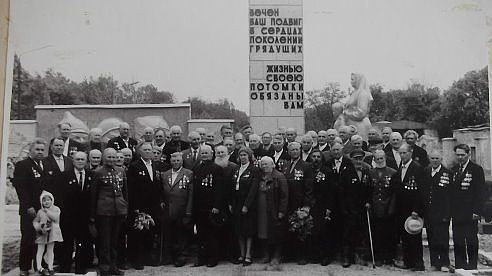

Мое село носит мелодичное название Литвиновка. Оно рифмуется со словом малиновка и напоминает теньканье синицы. Однако история, скрывающаяся за этим названием, не такая уж веселая и беззаботная. И если говорить об истории, Литвиновкой село именовано в четвертую очередь...
Наши люди

С 2013 г. звание «Герой труда» снова является официальной наградой государства своим отличившимся гражданам. Действительно, разве важно социалистический труд, капиталистический или ещё какой-нибудь, для него есть другие определения – самоотверженный, доблестный, вдохновенный. Именно эти качества присущи лучшим работникам, а ещё то, что трудятся они с полной отдачей не за награды, а просто потому, что иначе не могут.